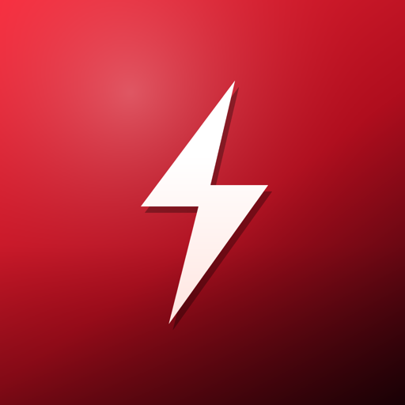
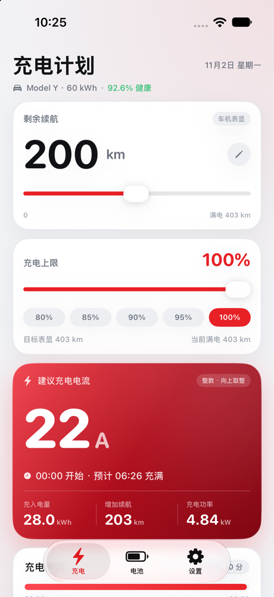
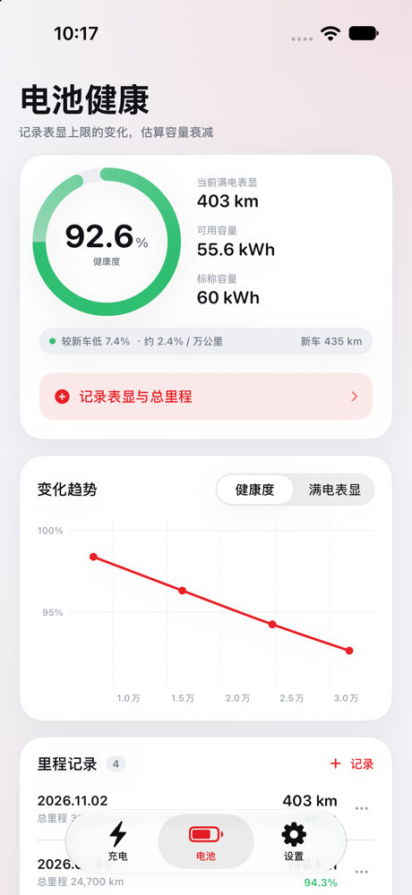
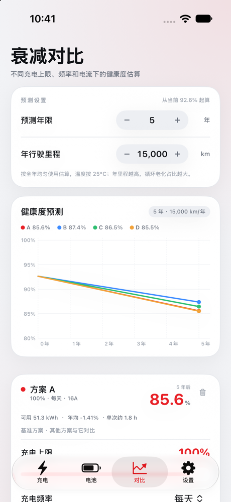
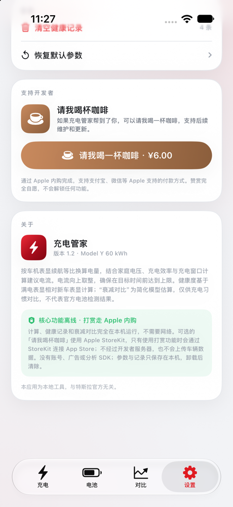

为特斯拉 Model Y 设计的夜间充电电流计算与电池健康记录工具
输入剩余续航和充电上限，按 00:00–06:30 窗口算出建议电流，向上取整。
记录满电表显和总里程，追踪健康度随里程的变化。
对比不同充电上限、频率、电流下 1–10 年后的健康度趋势。
计算和记录都在本机完成；无账号、无广告、无分析 SDK，不上传车辆数据。




App 内有一个可选的消耗型内购「请我喝杯咖啡」，通过 Apple 完成付款，不解锁任何功能。核心的充电计算、健康记录和衰减对比都可以免费使用。